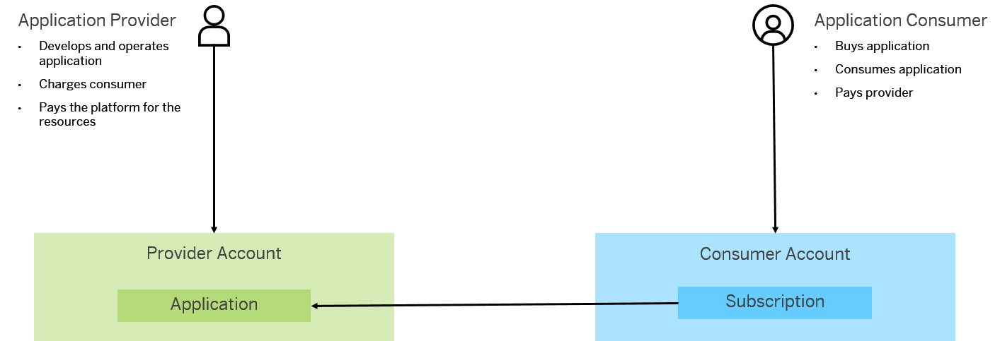

Managing Subscriptions
You can manage subscriptions to Java and HTML5 applications.
By using SAP Cloud Platform, a provider can build and run an application to be consumed by multiple customers. For that purpose, the platform provides the multitenant functionality, which allows providers to own, deploy, and operate the application for multiple customers with reduced costs. For example, the provider can upgrade the application for all customers instead of performing each individually, or can share resources across many customers. On the other side, the customers as application consumers can configure certain features of their applications and launch them through consumer-specific URLs. Furthermore, they can protect the application by isolating their tenants. To learn about multitenant applications, see Related Information.
Consumers do not deploy their applications in their accounts, but they simply subsribe to the provider application. As a result, a subscription is created in the consumer account. This subscription represents the contract or relation between an account (tenant) and a provider application.

SAP Cloud Platform supports Java and HTML5 subscriptions. HTML5 subscriptions used for HTML5 provider applications are configured only through the cockpit.
However, Java applications can be subscribed only through the console client. When such a subscription is set in the consumer account, the Java provider application can use a connectivity destination that is configured in the consumer account. .
-
You have a customer or partner account. For more information, see Account Types.
-
You have developed and deployed an application for multiple consumers. For more information, see Multitenant Applications.
-
The provider and consumer accounts belong to the same landscape. For more information, see Landscape Hosts.
-
(Only for Java subscriptions) You have set up the console client. For more information, see Setting Up the Console Client.
-
List Java subscriptions
-
Create Java subscriptions
-
Remove Java subscriptions
Under the Subscriptions overview, you can do the following:
-
List all Java and HTML5 applications to which your account is subscribed.
-
Launch the applications through dedicated (consumer-specific) URLs.
-
Create custom roles for your subscribed applications and assign roles (custom or predefined) to individual users and groups.
For this configuration, choose Roles in the navigation area.
-
(Only for Java subscriptions) Configure connection parameters to other systems by creating connectivity destinations.
For this configuration, choose
 Connectivity
Connectivity  Destinations
Destinations  in the navigation area.
in the navigation area. -
(Only for HTML5 subscriptions) Display the log files of the subscription.
-
(Only for HTML5 subscriptions) Manage subscriptions.